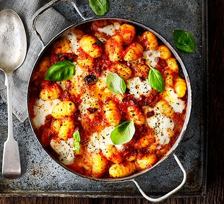

Chorizo & mozzarella gnocchi bake
Info
- Calories: 318kcals
- Servings: 6
- Time to prepare: 10 mintues
Ingredients
- 1 tbsp olive oil
- 1 onion
- 2 garlic cloves
- 120g chorizo
- 2x400g can chopped tomatoes
- 1 tsp caster sugar
- 600g fresh gnocchi
- 125g mozzarella ball
- small bunch of basil
- green salad
Instructions
- Heat the oil in a medium pan over a medium heat.
- Fry the onion and garlic for 8-10 mins until soft.
- Add the chorizo and fry for 5 mins more.
- Bring to a simmer, then add the gnocchi and cook for 8 mins, stirring often, until soft.
- Heat the grill to high.
- Stir ¾ of the mozzarella and most of the basil through the gnocchi.
- Divide the mixture between six ovenproof ramekins, or put in one baking dish.
- Top with the remaining mozzarella, then grill for 3 mins, or until the cheese is melted and golden.
- Season, scatter over the remaining basil and serve with green salad.
Photo

Similar Recipes
Blue chesse gnocchi
Ursula's pumpkin pasta
Instant meatballs with penne pasta